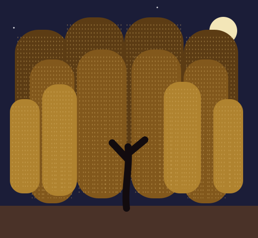

Study better.Grow together.
A calm digital corner made by SBIT-1F students for planning classes, tracking grades, meeting our team, and making college feel a little lighter.
No login. No cost. Just useful tools.


A place to pause, plan, and progress.
Built around real student days.
Between commutes, classes, group work, and deadlines, student life gets crowded fast. Study Hub gives our QCU community one uncluttered place to sort it out.
Every tool works instantly and privately in your browser, so you can focus on the work, not another account.
Meet the students behind itEverything you need to stay on track
Class Scheduler
Upload your Certificate of Registration and get a JPEG wallpaper of your week.
Open tool02ACCURATEGrade Calculator
Estimate your standing using the 60/40 grading rule.
Open tool03NEWReviewer Deck
Upload a .txt reviewer and get flashcards and a quiz instantly.
Open tool04DISCRETE MATHTruth Tables
Type expressions with ¬ ∧ ∨ → ↔ and get the full table.
Open tool05DESIGNColor Picker
Pick from a color wheel and copy HEX, RGB, or HSL codes.
Open tool06FOR IT STUDENTSNumber Converter
Convert and calculate in binary, octal, decimal, and hex.
Open tool07NEWFile Converter
Turn PDF into Word, slides into text, or photos into a PDF.
Open toolThe students behind Study Hub

Jarield Lumapas
Team Leader
Leads the team and keeps every tool working together.
Jarield Lumapas

Hannah Lee Jazz Gliane
UI Designer
Shapes how Study Hub looks, from colors to layout.

Mark David Gideon M. Dando
UX Designer
Makes every tool easy to understand and quick to use.
Mark David Gideon M. Dando

Carelyn Ann A. Arcenal
Researcher
Finds out what students need and checks that it works.
Carelyn Ann A. Arcenal

Team Member 5
Backend Developer
Builds the behind-the-scenes logic that keeps Study Hub running.
Team Member 5
Questions, ideas, or feedback?
Study Hub is a student project, and we would love to hear how it can make your academic routine better.
Email the team